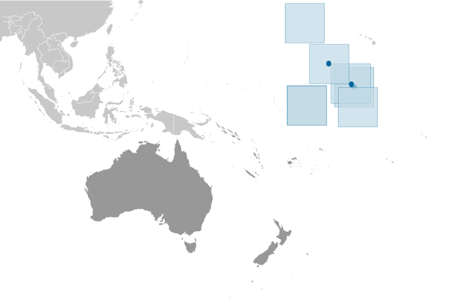
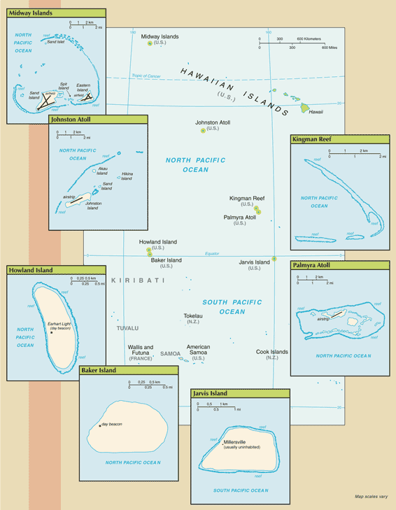
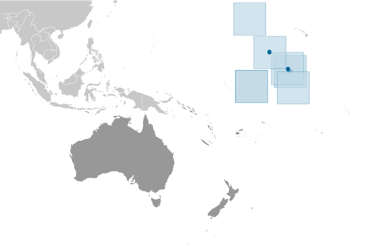
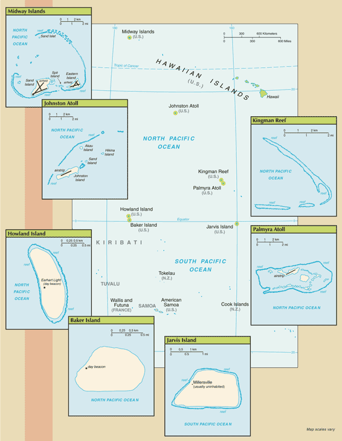

Australia-Oceania :: UNITED STATES PACIFIC ISLAND WILDLIFE REFUGES
Introduction :: UNITED STATES PACIFIC ISLAND WILDLIFE REFUGES
-
All of the following US Pacific island territories except Midway Atoll constitute the Pacific Remote Islands National Wildlife Refuge (NWR) Complex and as such are managed by the Fish and Wildlife Service of the US Department of the Interior. Midway Atoll NWR has been included in a Refuge Complex with the Hawaiian Islands NWR and also designated as part of Papahanaumokuakea Marine National Monument. These remote refuges are the most widespread collection of marine- and terrestrial-life protected areas on the planet under a single country's jurisdiction. They sustain many endemic species including corals, fish, shellfish, marine mammals, seabirds, water birds, land birds, insects, and vegetation not found elsewhere.Baker Island: The US took possession of the island in 1857. Its guano deposits were mined by US and British companies during the second half of the 19th century. In 1935, a short-lived attempt at colonization began on this island but was disrupted by World War II and thereafter abandoned. The island was established as a NWR in 1974.Howland Island: Discovered by the US early in the 19th century, the uninhabited atoll was officially claimed by the US in 1857. Both US and British companies mined for guano deposits until about 1890. In 1935, a short-lived attempt at colonization began on this island, similar to the effort on nearby Baker Island, but was disrupted by World War II and thereafter abandoned. The famed American aviatrix Amelia EARHART disappeared while seeking out Howland Island as a refueling stop during her 1937 round-the-world flight; Earhart Light, a day beacon near the middle of the west coast, was named in her memory. The island was established as a NWR in 1974.Jarvis Island: First discovered by the British in 1821, the uninhabited island was annexed by the US in 1858 but abandoned in 1879 after tons of guano had been removed. The UK annexed the island in 1889 but never carried out plans for further exploitation. The US occupied and reclaimed the island in 1935. It was abandoned in 1942 during World War II. The island was established as a NWR in 1974.Johnston Atoll: Both the US and the Kingdom of Hawaii annexed Johnston Atoll in 1858, but it was the US that mined the guano deposits until the late 1880s. Johnston and Sand Islands were designated wildlife refuges in 1926. The US Navy took over the atoll in 1934. Subsequently, the US Air Force assumed control in 1948. The site was used for high-altitude nuclear tests in the 1950s and 1960s. Until late in 2000 the atoll was maintained as a storage and disposal site for chemical weapons. Munitions destruction, cleanup, and closure of the facility were completed by May 2005. The Fish and Wildlife Service and the US Air Force are currently discussing future management options; in the interim, Johnston Atoll and the three-mile Naval Defensive Sea around it remain under the jurisdiction and administrative control of the US Air Force.Kingman Reef: The US annexed the reef in 1922. Its sheltered lagoon served as a way station for flying boats on Hawaii-to-American Samoa flights during the late 1930s. There are no terrestrial plants on the reef, which is frequently awash, but it does support abundant and diverse marine fauna and flora. In 2001, the waters surrounding the reef out to 12 nm were designated a NWR.Midway Islands: The US took formal possession of the islands in 1867. The laying of the transpacific cable, which passed through the islands, brought the first residents in 1903. Between 1935 and 1947, Midway was used as a refueling stop for transpacific flights. The US naval victory over a Japanese fleet off Midway in 1942 was one of the turning points of World War II. The islands continued to serve as a naval station until closed in 1993. Today the islands are a NWR and are the site of the world's largest Laysan albatross colony.Palmyra Atoll: The Kingdom of Hawaii claimed the atoll in 1862, and the US included it among the Hawaiian Islands when it annexed the archipelago in 1898. The Hawaii Statehood Act of 1959 did not include Palmyra Atoll, which is now partly privately owned by the Nature Conservancy with the rest owned by the Federal government and managed by the US Fish and Wildlife Service. These organizations are managing the atoll as a wildlife refuge. The lagoons and surrounding waters within the 12-nm US territorial seas were transferred to the US Fish and Wildlife Service and designated a NWR in January 2001.
Geography :: UNITED STATES PACIFIC ISLAND WILDLIFE REFUGES
-
OceaniaBaker Island: atoll in the North Pacific Ocean 3,390 km southwest of Honolulu, about halfway between Hawaii and AustraliaHowland Island: island in the North Pacific Ocean 3,360 km southwest of Honolulu, about halfway between Hawaii and AustraliaJarvis Island: island in the South Pacific Ocean 2,415 km south of Honolulu, about halfway between Hawaii and Cook IslandsJohnston Atoll: atoll in the North Pacific Ocean 1,330 km southwest of Honolulu, about one-third of the way from Hawaii to the Marshall IslandsKingman Reef: reef in the North Pacific Ocean 1,720 km south of Honolulu, about halfway between Hawaii and American SamoaMidway Islands: atoll in the North Pacific Ocean 2,335 km northwest of Honolulu near the end of the Hawaiian Archipelago, about one-third of the way from Honolulu to TokyoPalmyra Atoll: atoll in the North Pacific Ocean 1,780 km south of Honolulu, about halfway between Hawaii and American SamoaBaker Island: 0 13 N, 176 28 WHowland Island: 0 48 N, 176 38 WJarvis Island: 0 23 S, 160 01 WJohnston Atoll: 16 45 N, 169 31 WKingman Reef: 6 23 N, 162 25 WMidway Islands: 28 12 N, 177 22 WPalmyra Atoll: 5 53 N, 162 05 WOceaniatotal - 6,959.41 sq km; emergent land - 22.41 sq km; submerged - 6,937 sq kmBaker Island: total - 129.1 sq km; emergent land - 2.1 sq km; submerged - 127 sq kmHowland Island: total - 138.6 sq km; emergent land - 2.6 sq km; submerged - 136 sq kmJarvis Island: total - 152 sq km; emergent land - 5 sq km; submerged - 147 sq kmJohnston Atoll: total - 276.6 sq km; emergent land - 2.6 sq km; submerged - 274 sq kmKingman Reef: total - 1,958.01 sq km; emergent land - 0.01 sq km; submerged - 1,958 sq kmMidway Islands: total - 2,355.2 sq km; emergent land - 6.2 sq km; submerged - 2,349 sq kmPalmyra Atoll: total - 1,949.9 sq km; emergent land - 3.9 sq km; submerged - 1,946 sq kmcountry comparison to the world: 241Baker Island: about 2.5 times the size of the National Mall in Washington, DCHowland Island: about three times the size of the National Mall in Washington, DCJarvis Island: about eight times the size of the National Mall in Washington, DCJohnston Atoll: about 4.5 times the size of the National Mall in Washington, DCKingman Reef: a little more than 1.5 times the size of the National Mall in Washington, DCMidway Islands: about nine times the size of the National Mall in Washington, DCPalmyra Atoll: about 20 times the size of the National Mall in Washington, DC0 kmBaker Island: 4.8 kmHowland Island: 6.4 kmJarvis Island: 8 kmJohnston Atoll: 34 kmKingman Reef: 3 kmMidway Islands: 15 kmPalmyra Atoll: 14.5 kmterritorial sea: 12 nmexclusive economic zone: 200 nmBaker, Howland, and Jarvis Islands: equatorial; scant rainfall, constant wind, burning sunJohnston Atoll and Kingman Reef: tropical, but generally dry; consistent northeast trade winds with little seasonal temperature variationMidway Islands: subtropical with cool, moist winters (December to February) and warm, dry summers (May to October); moderated by prevailing easterly winds; most of the 107 cm of annual rainfall occurs during the winterPalmyra Atoll: equatorial, hot; located within the low pressure area of the Intertropical Convergence Zone (ITCZ) where the northeast and southeast trade winds meet, it is extremely wet with between 400-500 cm of rainfall each yearlow and nearly flat sandy coral islands with narrow fringing reefs that have developed at the top of submerged volcanic mountains, which in most cases rise steeply from the ocean floorelevation extremes: lowest point: Pacific Ocean 0 mhighest point: Baker Island, unnamed location - 8 m; Howland Island, unnamed location - 3 m; Jarvis Island, unnamed location - 7 m; Johnston Atoll, Sand Island - 10 m; Kingman Reef, unnamed location - less than 2 m; Midway Islands, unnamed location - 13 m; Palmyra Atoll, unnamed location - 3 mterrestrial and aquatic wildlifeagricultural land: 0%arable land 0%; permanent crops 0%; permanent pasture 0%forest: 0%other: 100% (2011 est.)Baker, Howland, and Jarvis Islands: the narrow fringing reef surrounding the island poses a maritime hazardKingman Reef: wet or awash most of the time, maximum elevation of less than 2 m makes Kingman Reef a maritime hazardMidway Islands, Johnston, and Palmyra Atolls: NABaker, Howland, and Jarvis Islands, and Johnston Atoll: no natural freshwater resourcesKingman Reef: noneMidway Islands and Palmyra Atoll: NABaker, Howland, and Jarvis Islands: scattered vegetation consisting of grasses, prostrate vines, and low growing shrubs; primarily a nesting, roosting, and foraging habitat for seabirds, shorebirds, and marine wildlife; closed to the publicJohnston Atoll: Johnston Island and Sand Island are natural islands, which have been expanded by coral dredging; North Island (Akau) and East Island (Hikina) are manmade islands formed from coral dredging; the egg-shaped reef is 34 km in circumference; closed to the publicKingman Reef: barren coral atoll with deep interior lagoon; closed to the publicMidway Islands: a coral atoll managed as a National Wildlife Refuge and open to the public for wildlife-related recreation in the form of wildlife observation and photographyPalmyra Atoll: the high rainfall and resulting lush vegetation make the environment of this atoll unique among the US Pacific Island territories; supports a large undisturbed stand of Pisonia beach forest
People and Society :: UNITED STATES PACIFIC ISLAND WILDLIFE REFUGES
-
no indigenous inhabitantsnote: public entry is only by special-use permit from US Fish and Wildlife Service and generally restricted to scientists and educators; visited annually by US Fish and Wildlife ServiceJarvis Island: Millersville settlement on western side of island occasionally used as a weather station from 1935 until World War II, when it was abandoned; reoccupied in 1957 during the International Geophysical Year by scientists who left in 1958; currently unoccupiedJohnston Atoll: in previous years, an average of 1,100 US military and civilian contractor personnel were present; as of May 2005, all US Government personnel had left the islandMidway Islands: approximately 40 people make up the staff of US Fish and Wildlife Service and their services contractor living at the atollPalmyra Atoll: four to 20 Nature Conservancy, US Fish and Wildlife staff, and researchers
Government :: UNITED STATES PACIFIC ISLAND WILDLIFE REFUGES
-
conventional long form: noneconventional short form: Baker Island; Howland Island; Jarvis Island; Johnston Atoll; Kingman Reef; Midway Islands; Palmyra Atolletymology: self-descriptive name specifying the territories' affiliation and locationunincorporated territories of the US; administered from Washington, DC, by the Fish and Wildlife Service of the US Department of the Interior as part of the National Wildlife Refuge Systemnote on Palmyra Atoll: incorporated territory of the US; partly privately owned and partly federally owned; administered from Washington, DC, by the Fish and Wildlife Service of the US Department of the Interior; the Office of Insular Affairs of the US Department of the Interior continues to administer nine excluded areas comprising certain tidal and submerged lands within the 12 nm territorial sea or within the lagoonthe laws of the US, where applicable, applynone (territories of the US)the flag of the US is used
Economy :: UNITED STATES PACIFIC ISLAND WILDLIFE REFUGES
-
no economic activity
Transportation :: UNITED STATES PACIFIC ISLAND WILDLIFE REFUGES
-
Baker Island: one abandoned World War II runway of 1,665 m covered with vegetation and unusableHowland Island: airstrip constructed in 1937 for scheduled refueling stop on the round-the-world flight of Amelia EARHART and Fred NOONAN; the aviators left Lae, New Guinea, for Howland Island but were never seen again; the airstrip is no longer serviceableJohnston Atoll: one closed and not maintainedKingman Reef: lagoon was used as a halfway station between Hawaii and American Samoa by Pan American Airways for flying boats in 1937 and 1938Midway Islands: 3 - one operational (2,377 m paved); no fuel for sale except emergenciesPalmyra Atoll: 1 - 1,846 m unpaved runway; privately owned (2013)2,438 to 3,047 m: 1 - Johnston Atoll; note - abandoned but usable (2016)1,524 to 2,437 m: 1 - Palmyra Atoll (2016)major seaport(s):Baker, Howland, and Jarvis Islands, and Kingman Reef: none; offshore anchorage onlyJohnston Atoll: Johnston IslandMidway Islands: Sand IslandPalmyra Atoll: West Lagoon
Military and Security :: UNITED STATES PACIFIC ISLAND WILDLIFE REFUGES
-
defense is the responsibility of the US
Transnational Issues :: UNITED STATES PACIFIC ISLAND WILDLIFE REFUGES
-
none